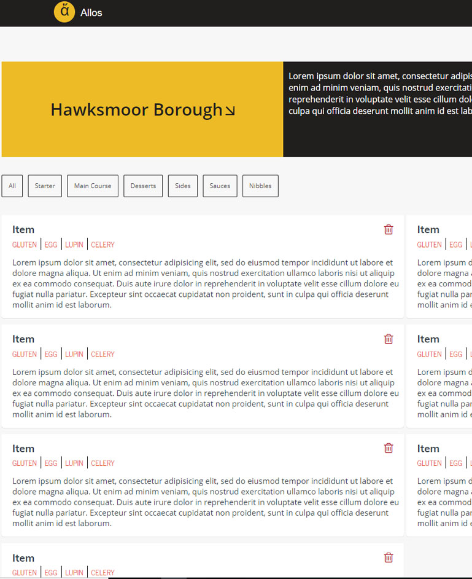
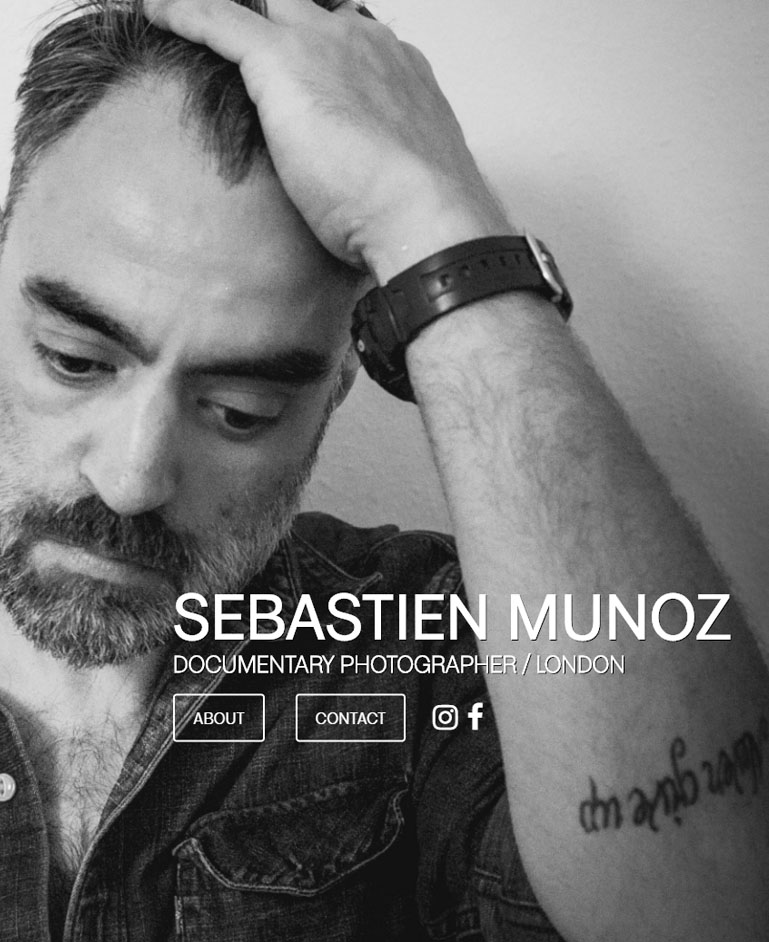
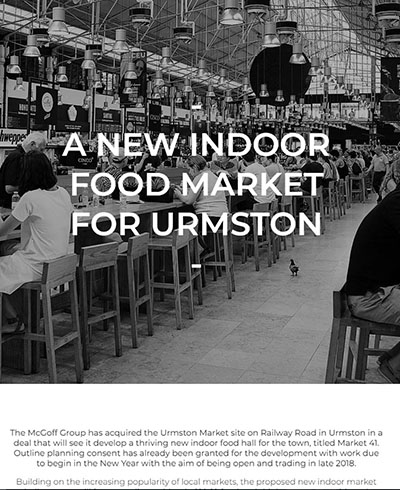
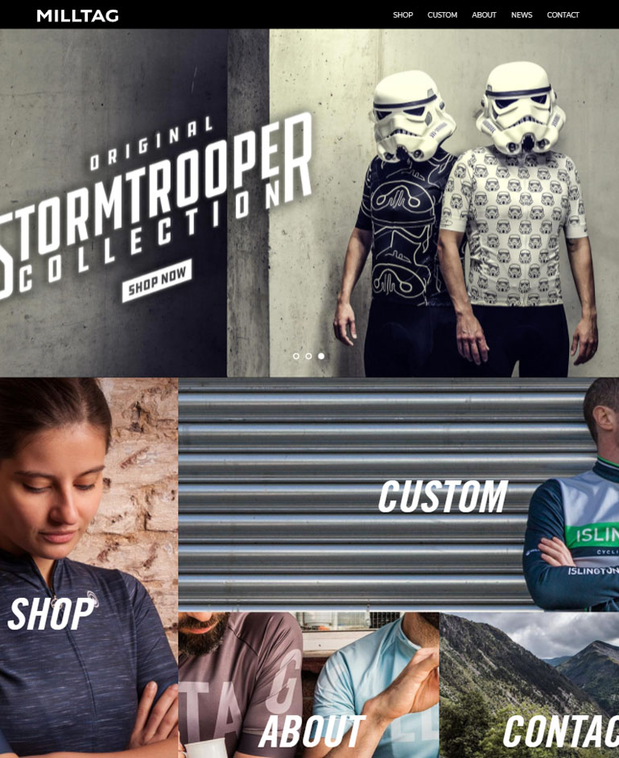
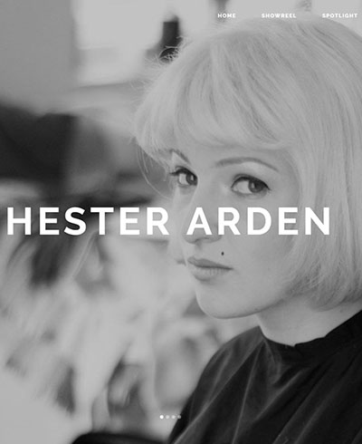
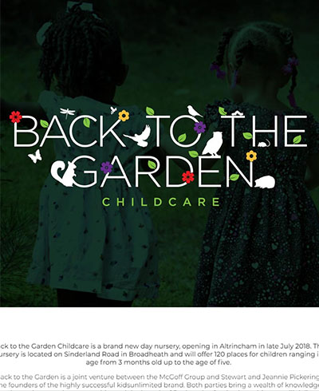

Allos
Allos - Work in progress
Allos is a platform created to help resaurants comply with food safety regulations and help customers choosing without fuss food items easily and confidently.
Allos has two API entry points, one that requires authentification token which let users add products and locations and a public one which can be access by customers and visualise menus.
Stack:
-ReactJS
-Redux
-PassportJS
-Express
-NodeJS
-MongoDB
-Heroku
-CSS grids

Sebastien Munoz
Sebastien Munoz
Photographer website on shared hosting.
Stack:
-VanillaJS
-JQuery
-FullPageJS
PubTube
PubTube
Webapp helping to make critical decisions coming the end of the week. Finding out how busy the tube is at a specific station and telling me how busy the train will be.
Stack:
-AngularJS
-JQuery
-Heroku
-Bootsrap
Old School Leeds
Old School Leeds - Commercial work
Old School Leeds is a redevelopped Grade II listed building.
Stack:
-Bootsrap
-VanillaJS
-php
Milltag
Milltag - Phase 2 WIP
Milltag is a custom cycling company working closely with designers.
The Phase 2 of a long term relationship with Milltag is taking them away from their wordpress website and moving to shopify.
Stack:
-Html5
-Liquid
-Sass

Market 41
Market 41 - Commercial work
Market 41 is a project aiming to gather all the best food in Urmston.
Stack:
-VanillaJS
-Bootstrap
-php

Milltag
Milltag - Phase 1
Milltag is a custom cycling company working closely with designers.
The Phase 1 of a long term relationship with Milltag. Working on legacy Wordpress platform. The first phase involved doing a face lift to the website content without interfering with the woocommerce or blog part of the site.
Stack:
-php
-Wordpress
-MySQL
-Bootstrap

Hester Arden
Hester Arden - Commercial work
Hester is an actor based in the UK.
The work consisted mainly on amending the template codebase and adding features.
Stack:
-VanillaJS
-Bootstrap
-php
-Wordpress

Back To The Garden
Back To The Garden - Commercial work
Back To The Garden is a new day nursery which focuses on the health and wellbeing of each and every child.
Stack:
-VanillaJS
-Bootstrap
-php